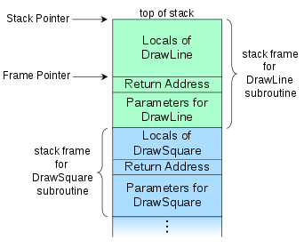

[Reverse Engineering Workshop] Prep #2 - The Call Stack & OllyDbg
Hi y’all!
We hope the previous task went well.
This time we’ll focus on the stack and its state throughout the run time of a program. This material will be reviewed during the workshop, but don’t think we are wasting your time - this stuff needs repetition! The more you hear it, the better you understand it. The call stack and calling conventions are confusing topics in x86 architecture. Don’t make this scare you. We will go through this together until it will eventually make perfect sense.
Ok, let’s go!
Our second preparation will target the following topic:
-
The call stack
-
OllyDbg installation
Time estimation: 2 hours.
The Call Stack & Calling Conventions
In computer science, a call stack is a data structure that stores information about the active subroutines of a computer program. This kind of stack is also known as an execution stack, program stack, control stack, run-time stack, or machine stack, and is often shortened to just "the stack".
In the previous prep-mail, you’ve read about x86 instructions. Do you remember any instructions related to the stack? push? pop? call? ret? we’ll soon address them again.
Goals of the Call Stack
1. Storing return addresses
The main reason for having a call stack is to keep track of the point to which each active subroutine should return when it finishes executing. If, for example, a subroutine DrawSquare calls a subroutine DrawLine from four different places, DrawLine must know where to return when its execution completes. To accomplish this, the address following the call instruction - i.e. the return address - is pushed onto the call stack with each call.
2. Local data storage
A function frequently needs memory space for storing the values of local variables, the variables that are known only within the function's scope and are not meant to be used after it returns. It is convenient to allocate space for these variables by "extending" the top of the stack towards the lower addresses, to provide the necessary space (we'll see this in action later on).
3. Parameter passing
Subroutines often require that parameter values be supplied to them by the code which calls them. The call stack works well as a place for these parameters, especially since each call to a subroutine will be given separate space on the call stack for those values.
Call Stack Structure
A call stack is composed of stack frames - data structures containing subroutine state information. What is state information? Function parameters, local variables, return address and the frame’s base address.
Each stack frame corresponds to a call to a subroutine which has not yet returned.
For example, if a subroutine named DrawLine is currently running (and was called by DrawSquare), the top part of the call stack might be laid out (roughly!) like in the picture:

The stack frame at the top of the stack is for the currently executing routine. The stack frame usually includes at least the following items (in push order):
-
the arguments (parameter values) passed to the routine (if any);
-
the return address back to the routine's caller (e.g. in the DrawLine stack frame, an address into DrawSquare’s code); and
-
space for the local variables of the routine (if any).
Stack & Frame Pointers
The next two paragraphs might be very confusing. If necessary, read them again and again, use a pen and a paper, repeat until you feel comfortable with the presented information. It's important :)
Recall: ESP is the Stack Pointer - it always points to the top of the stack.
When values are pushed onto the stack - it decreases. When values are popped off the stack - it increases.
Therefore, this register tends to change frequently.
During a function’s execution, we need a way to access the function data - its parameters and local variables. Due to the dynamic nature of ESP - we can’t use it as an anchor. Instead, we take the value of ESP at the moment when the function is called and we put it in EBP - the Base Pointer. During the function execution, EBP will stay fixed (unlike ESP). Thus, EBP can be used as an anchor to access parameters and variables.
Note that when moving ESP’s value into EBP, we override the value already stored in EBP. For this reason, we need to preserve EBP’s previous value somehow - this is done by pushing EBP onto the stack right before it receives its new value.
Imagine DrawSquare calls DrawLine. DrawSquare’s stack frame will appear first (in higher addresses) on the stack.
-
When DrawLine is called, the current EBP (Base Pointer of DrawSquare) will be pushed onto the stack.
-
EBP will then be assigned the current value of ESP. From now on, EBP is used as DrawLine’s base pointer to access its variables and parameters.
-
Throughout DrawLine, ESP might change many times, but EBP is fixed.
-
When DrawLine terminates, ESP will be set to the value of EBP. This sets the pointer to the top of the stack to be equal to the base pointer, and practically frees the memory allocated on the stack for the local variables.
-
DrawSquare’s EBP will be popped from the stack. From now on, EBP can be used again as DrawSquare’s base pointer.
So, in fact, for some function func, func's stack frame contains the EBP value of func’s caller, but the EBP register itself is func’s base pointer.
Now watch this video to visualize what you’ve read up till now.
Installing OllyDbg
OllyDbg is a 32-bit assembler level analyzing debugger for Windows. Emphasis on binary code analysis makes it particularly useful in cases where source is unavailable.
Now in simple words :D
Olly lets us run a program instruction by instruction, put breakpoints, see the state of the registers, memory and stack and change (assemble) the code.
Download Olly here. We will use it in the last part of our workshop.
Now let’s perform a short sanity check and go through the four most useful shortcuts in Olly.
Download the famous game Minesweeper from this link or from wherever seems benign enough for you ;)
-
Open OllyDbg. Make sure there are no error messages etc. (you might need to run it as administrator).
-
In Olly, open Minesweeper.
-
Hit F9. This makes the program run until the next breakpoint (BP) or until user input is needed.
-
Find the address 01003E36 and click on it to highlight it. Hit F2 to put a BP on the instruction in that address.
-
Hit F9. The program should stop at address 01003E36.
-
Hit F7 to step into the function.
-
Now hit F8 to step over an instruction.
-
Ok now close everything, we’re done here :D
Quick Check
1. Which register holds the address of the top of the stack?
Show answer
ESP is the one.
2. Suppose the function multiply(x, y) creates 2 local variables — tmp1 and tmp2 — during its execution. What instruction do you expect to see that allocates memory for these variables?
Show answer
sub ESP, 0x8 — we allocate 4 bytes per variable by decrementing the stack pointer.
3. In what order will multiply’s parameters, x and y, be pushed onto the stack before the call to multiply?
Show answer
First y will be pushed and then x. Function parameters are pushed in reversed order.
4. How can each of them be accessed during the function execution? Write the exact expressions.
Show answer
[EBP+0x8] for x, [EBP+0xC] for y.
Have fun!